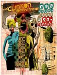

| Artist: | The Clinton Administration |
| Title: | One Nation Under A Re-groove |
| Label: | Magnatude MT-2301-2 |
| Length(s): | 55 minutes |
| Year(s) of release: | 2003 |
| Month of review: | [05/2003] |
| 1) | One Nation Under A Groove | 4.50 |
| 2) | (Not Just) Knee Deep | 4.36 |
| 3) | Cosmic Slop | 4.57 |
| 4) | Flash Light | 6.55 |
| 5) | Bop Gun (Endangered Species) | 4.20 |
| 6) | Motership Connection (Star Child) | 4.50 |
| 7) | Give Up The Funk (Tear The Roof Off The Sucker) | 5.15 |
| 8) | Up For The Downstroke | 3.27 |
| 9) | Chocolate City | 8.03 |
| 10) | Hit It And Quit It | 6.15 |